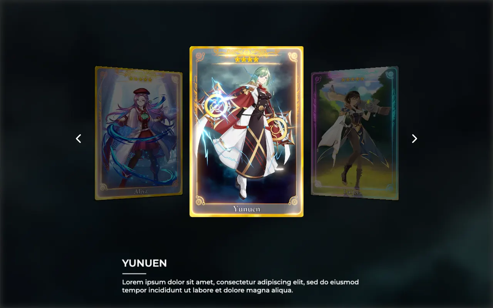
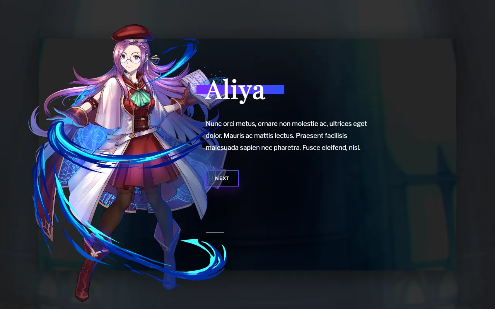
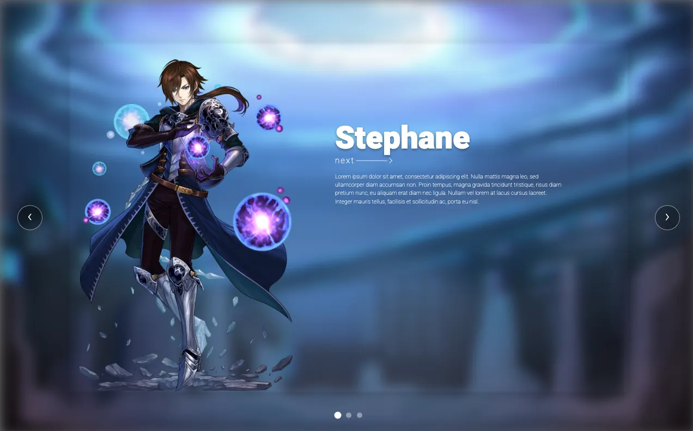

Earlier work · Brand and web
Redesigning the Remnant Labs website
Remnant Labs is a fantasy-anime universe spanning several connected games. As lead front-end developer I ran the overhaul of the studio's website, from audience research and brand voice to prototypes and the Vue front end that shipped.
- Web traffic up 125%After launch
- Lead front endResearch, brand voice, design and the Vue build
- 3 interactive character cardsPrototyped on CodePen

Research
I started with the genre: who plays fantasy-anime strategy games, what competing studios sound like, and where a new brand could stand out. With the team we set a brand foundation:
- Brand voice. Graphics heavily influenced by Japanese anime, a whimsical tone, a bright and adventurous atmosphere.
- Audience. Casual and strategy players, teens and young adults in North America, Japan, China, and Korea.
- Tone. A casual role-playing voice across the site and in-game text, used whenever developers and game masters speak to players.


Prototyping
Low-fidelity wireframes first, so the team and stakeholders could test layouts quickly before any visual design.

Homepage
A transparent navigation bar with deliberately few options (Hick's law) for fast decisions, a trailer video showing the game's art and concept, and a clear call to action beside the brand description.

Games page
I proposed and designed a games page showcasing the whole Remnant ecosystem so players could browse between titles.

Implementation
Character card components
Character cards are central to the game, so I built three interactive versions exploring how to present avatars and descriptions.

A card slider: animated character art, with the scene behind it changing to match. Use the arrows. Open on CodePen ↗︎

Info cards: portrait, name and story on one card. Next swaps the character. Based on a design by Catalin V. Open on CodePen ↗︎

A pop-out slider: full-bleed art with the character stepping out of the frame. Use the arrows or the dots. Open on CodePen ↗︎
These are screenshots. Open this page on a larger screen, or on CodePen, to try them.
Results
Web traffic went up 125% after launch, and engagement and conversion rose with it. Simpler navigation, the new games page and art matched to the game made the site feel like part of the game.